전문
내과 진료
심장·호흡기 / 순환기 질환
기침, 호흡곤란, 운동 시 피로감 등의 증상을 보이는 환자에 대해
심장질환 및 호흡기 질환을 중심으로 정확한 진단과 치료를 진행합니다.
심장초음파 및 영상 진단을 바탕으로
환자의 상태에 맞는 관리와 치료를 제공합니다.
관련 장비

올인원 건식 생화학 카트리지
생화학 및 면역학 검사가 가능한 올인원 혈액 분석기

동물용 혈액학검사장비
빈혈, 염증 등을 진단하는 자동 혈구 계산기

형광면역분석 장비
호르몬, 심장 마커 등을 측정하는 형광 면역 분석기

체외진단분석기
다양한 전염성 질환을 판독하는 간이 키트 판독기

수의 혈액 화학 분석기
신장, 간 수치 및 전해질을 실시간으로 확인하는 분석기

전해질,혈액가스분석기
전해질 및 혈액 내 산소 농도를 측정하는 필수 분석 장비

혈액분석기
대학병원급 정밀도를 자랑하는 혈액구 성분 분석기

엑스레이
디지털 감도로 미세한 병변까지 포착하는 영상 진단기

도플러 혈압계
청진이 어려운 반려동물의 혈압을 정확히 측정하는 장비

생체 신호 모니터
심박수, 호흡 등 환자의 상태를 실시간으로 살피는 모니터

범용초음파영상진단장치
심장 및 복부의 정밀한 영상 진단을 돕는 최신 초음파
내분비 질환
당뇨, 쿠싱증후군, 갑상선 질환 등
호르몬 이상으로 발생하는 질환에 대해 진료합니다.
호르몬 검사와 지속적인 모니터링을 통해
환자의 상태에 맞는 맞춤형 치료와 관리가 가능합니다.
관련 장비
올인원 건식 생화학 카트리지
생화학 및 면역학 검사가 가능한 올인원 혈액 분석기
동물용 혈액학검사장비
빈혈, 염증 등을 진단하는 자동 혈구 계산기
형광면역분석 장비
호르몬, 심장 마커 등을 측정하는 형광 면역 분석기
체외진단분석기
다양한 전염성 질환을 판독하는 간이 키트 판독기
수의 혈액 화학 분석기
신장, 간 수치 및 전해질을 실시간으로 확인하는 분석기
전해질,혈액가스분석기
전해질 및 혈액 내 산소 농도를 측정하는 필수 분석 장비
혈액분석기
대학병원급 정밀도를 자랑하는 혈액구 성분 분석기

C.T
심부 조직의 병변을 입체적으로 진단하는 정밀 영상 장비
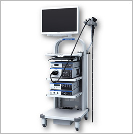
내시경
비침습적으로 소화기 내부를 정밀하게 검사하는 장비

현미경
세포 및 미생물을 고배율로 정밀 관찰하는 진단 장치
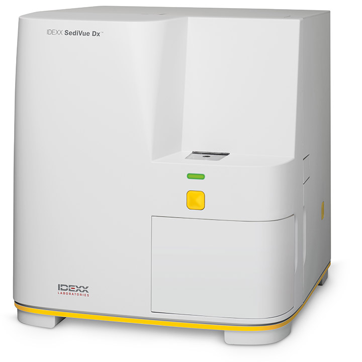
뇨침사분석기
소변 내 성분을 인공지능으로 자동 분석하는 정밀 장비
소화기·신장·간 질환
구토, 설사, 식욕부진 등 소화기 증상부터
신장질환, 간질환 등 다양한 내과 질환을 진료합니다.
혈액검사와 영상검사를 기반으로 원인을 정확하게 파악하고 지속적인 관리까지 이어지는 진료를 제공합니다.
관련 장비
올인원 건식 생화학 카트리지
생화학 및 면역학 검사가 가능한 올인원 혈액 분석기
동물용 혈액학검사장비
빈혈, 염증 등을 진단하는 자동 혈구 계산기
형광면역분석 장비
호르몬, 심장 마커 등을 측정하는 형광 면역 분석기
체외진단분석기
다양한 전염성 질환을 판독하는 간이 키트 판독기
수의 혈액 화학 분석기
신장, 간 수치 및 전해질을 실시간으로 확인하는 분석기
전해질,혈액가스분석기
전해질 및 혈액 내 산소 농도를 측정하는 필수 분석 장비
혈액분석기
대학병원급 정밀도를 자랑하는 혈액구 성분 분석기
C.T
심부 조직의 병변을 입체적으로 진단하는 정밀 영상 장비
내시경
비침습적으로 소화기 내부를 정밀하게 검사하는 장비
현미경
세포 및 미생물을 고배율로 빠르고 정확한 진단이 가능합니다.
대학병원급 임상 경험을 갖춘 의료진이 진료합니다
그린벨동물의료센터는 대학병원 수준의 임상 경험을 갖춘 의료진이 직접 진료를 담당합니다.
단순한 증상 치료가 아닌, 정확한 판단이 필요한 환자에서도 경험을 바탕으로 깊이 있는 진료를 제공합니다.
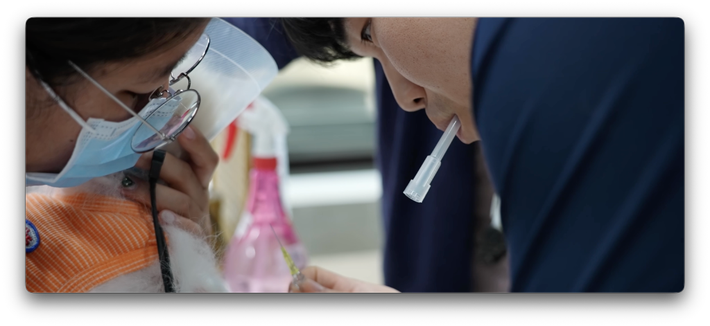
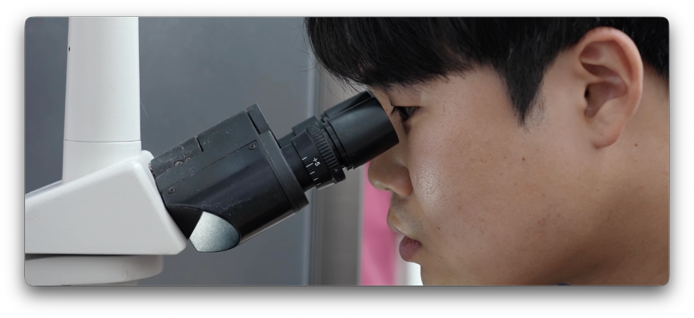
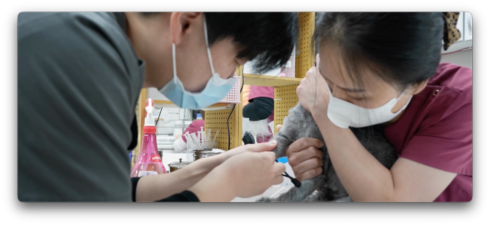
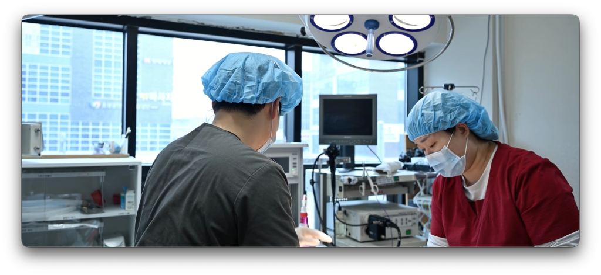
정밀 진단 환경
최고 사양의 검사 장비를 기반으로 한 정밀한 진단 환경을 갖추고 있습니다.
그린벨동물의료센터는 기본적인 혈액검사부터 다양한 추가 검사까지 최고 사양의 검사 장비를 기반으로 한 정밀한 진단 환경을
갖추고 있습니다.
IDEXX ProCyte, Catalyst, Sedivue 등 정밀 혈액 및 요검사 장비를 통해 대부분의 기본
검사를 병원 내에서 즉시 시행할 수 있으며, 호르몬 검사, 감염성 질환 검사(SNAP), 혈액 응고 검사 등 다양한
추가 검사까지 함께 진행이 가능합니다.
이를 통해 외부 의뢰에 의존하지 않고 빠르고 정확한 진단이 가능합니다.
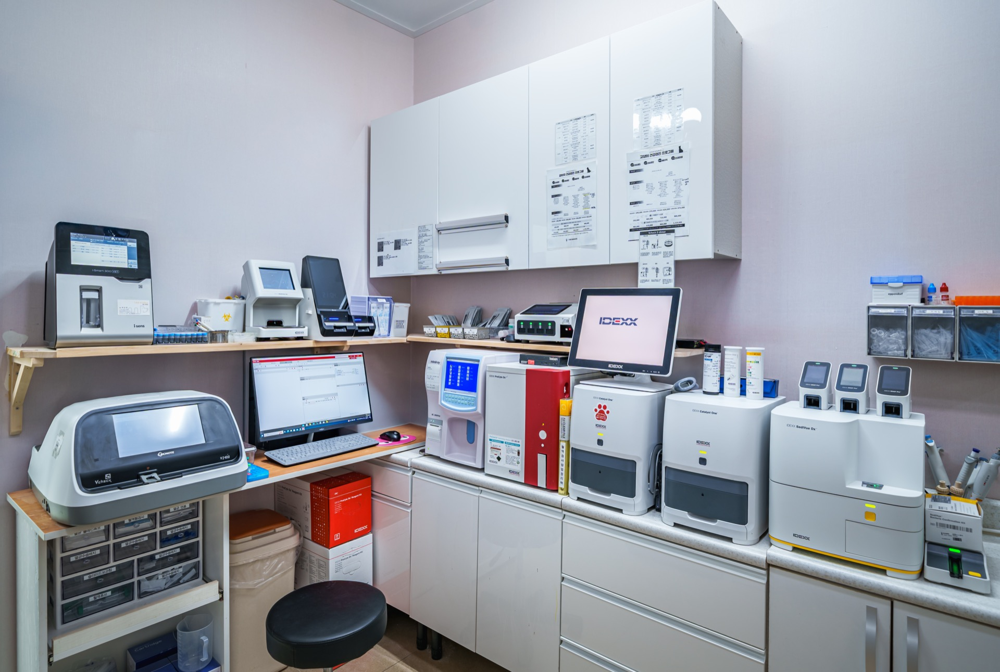
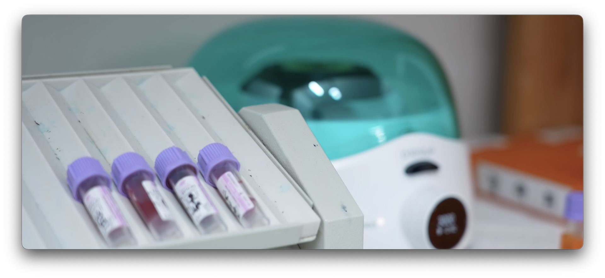
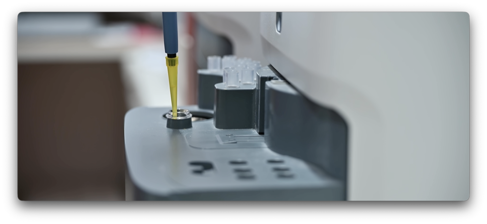
협진 진료 시스템
그린벨동물의료센터는 내과와 외과의 협진이 필요한 환자에 대해 즉시 의료진 간 논의를 통해 진료 방향을 결정합니다.
특히 종양 환자와 같이 복합적인 판단이 필요한 경우에도 여러 의료진이 함께 상의하여 보다 신중하고 정확한 치료
계획을 수립합니다.
팀 기반 진료를 통해 오진의 가능성을 줄이고 환자에게 최선의 치료를 제공합니다.
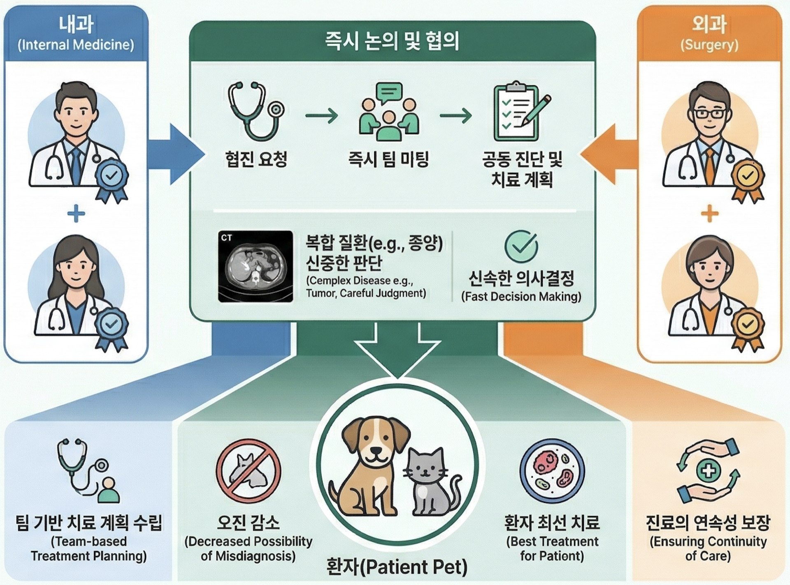
노령·만성질환 관리
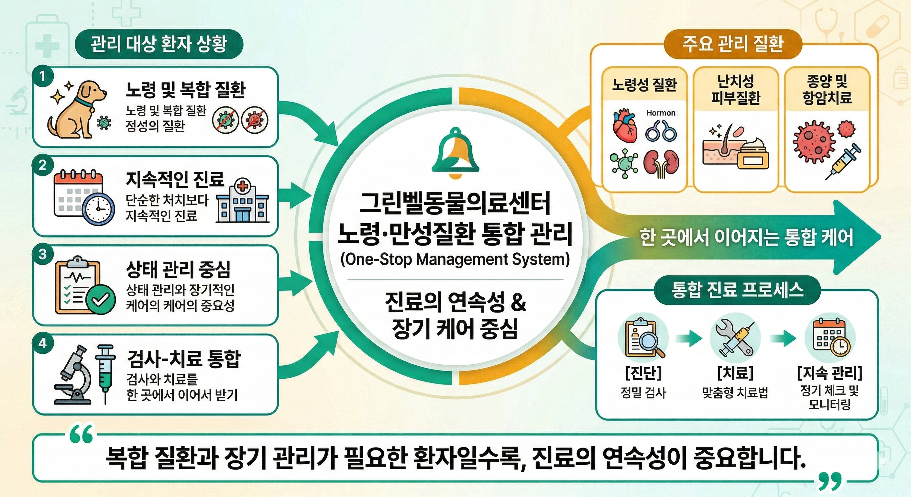
“진료의 결과는, 세심한 관리와 깊은 경험에서 결정됩니다”
임상 경험이 최선의 치료를 만듭니다
( 2025년 기준 누적환자 )
수천 건의 만성질환 관리 경험을 바탕으로
환자의 상태에 맞는 가장 적합한 치료 계획을 수립합니다.